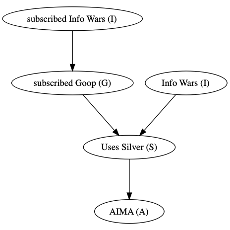
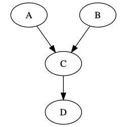
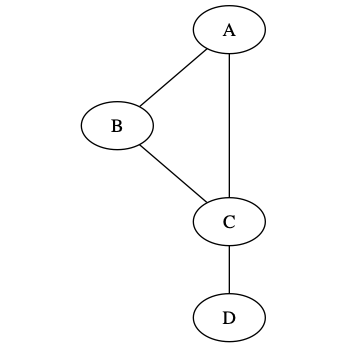
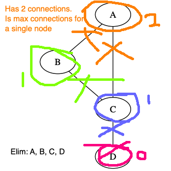

$$ \newcommand{\t}[1]{\text{#1}} $$
Definition. A topological order of hte nodes of a DAG, \(G\), is any order of the nodes so that a child never appears before its parent.
Initialize \(\text{count}(x_1, \dots, x_n) = 0, \forall x_1, \dot, x_n \in X_1 \times \cdots \time X_n\). Then repeat \(K\) times:
Ask \(\rightarrow \infty\): \(\frac{\t{count}(x_1, \dots, x_n)}{k} \rightarrow P(x_1, \dots, x_n)\), which is what we want!
Then
$$ P(R=AB \mid T=A) &= P(R=AB, T=A) / P(T=A) \\ &= \frac{\sum_{r^*} \cdots \sum P(R=AB, T=A, r^*, \dots)} {\sum_{r^*} \cdots \sum P(T=A, r^*, \dots)} \\ &\approx \frac{\sum_{r^*, \dots} \frac{\t{count}(r^*, s^*, t^*, R=A, s, T=AB, m, f)}{K}} {\sum_{r^*, \dots} \frac{\t{count}(r^*, s^*, t^*, r, s, T=AB, m, f)}{K}} \\ &= \frac{\t{total number of samples where R=A and T=AB}} {\t{total number of samples where T=AB}} $$
Suppose we can throw darts at dart board so that they land uniformly randomly. Then to calculate the area of a particular piece of the dart board, can just keep throwing darts and measure the percentage of times that we hit it times the area of the dart board.
Facebook ad that's really over the top about the health benefits of Colloidal Silver.
Endorsed by some celebrities (on Info Wars and Goop).
Have the following Bayesian network
But the probabilities work out that its extremeley rare to find someone with AIMA, so its not well known that's a risk of Colloidal Silver.
Definition. The width of an elimination order is, when eliminating on the moralized graph of the Bayesian network, is the max number of connections a single node has. For example
Original Bayesian network
Moralized graph
Elimination
